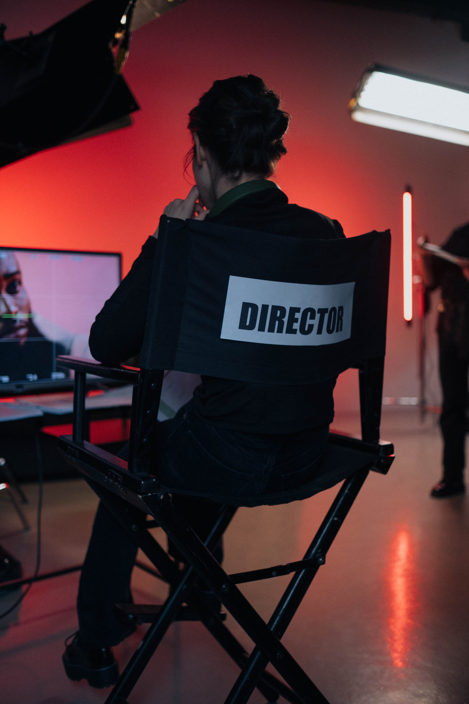
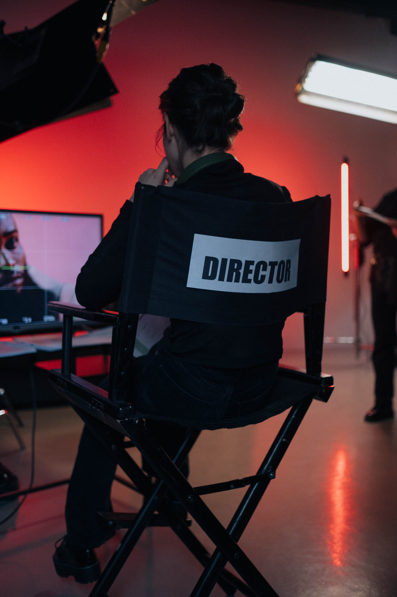

What they do: Produce or direct stage, television, radio, video, or film productions for entertainment, information, or instruction. Responsible for creative decisions, such as interpretation of script, choice of actors or guests, set design, sound, special effects, and choreography
A screenwriter is essentially a writer who creates or adapts a story into a script for the entertainment industry. These scripts are written in a specific way to help readers understand the story, setting, and emotion of how it will be seen and heard on a screen Plan details such as framing, composition, camera movement, sound, and actor movement for each shot or scene. The job requires communication towards actors the and movement needed for each scene in such a way that rehearsals and takes are minimized. They also, Direct live broadcasts, films and recordings, or non-broadcast programming for public entertainment or education.
SKILLS Basic Skills listening to others, not interrupting, and asking good questions keeping track of how well people and/or groups are doing in order to make improvements People and Technology Systems figuring out how a system should work and how changes in the future will affect it thinking about the pros and cons of different options and picking the best one Problem Solving noticing a problem and figuring out the best way to solve it
People interested in this work like activities that include creating, designing, and making your own rules. They do well at jobs that need: Attention to Detail Dependability Cooperation Integrity Stress Tolerance Adaptability/Flexibility Education: bachelor's degree or high school diploma/GED usually needed TECHNOLOGY You might use software like this on the job: Video creation and editing software TikTok Hot Technology YouTube Web page creation and editing software Instagram Hot Technology WordPress Hot Technology Music or sound editing software Adobe Audition Magix Vegas Pro KNOWLEDGE Communications multimedia telecommunications Arts and Humanities English language Engineering and Technology computers and electronics Business management ABILITIES Verbal communicate by speaking listen and understand what people say Ideas and Logic use rules to solve problems notice when problems happen Visual Understanding see hidden patterns quickly know what you are looking at Attention do two or more things at the same time
 

The Yearly Salary would is $85,320 or maybe more
Investigative - 6 Artistic- 24 Social- 14 Enterprising- 20 Convetional- 1
People with Investigative interests like work that has to do with ideas and thinking rather than physical activity or leading people. People with Artistic interests like work that deals with the artistic side of things, such as acting, music, art, and design. People with Social interests like working with others to help them learn and grow. They like working with people more than working with objects, machines, or information. People with Enterprising interests like work that has to do with starting up and carrying out business projects. These people like taking action rather than thinking about things. People with Conventional interests like work that follows set procedures and routines. They prefer working with information and paying attention to details rather than working with ideas.